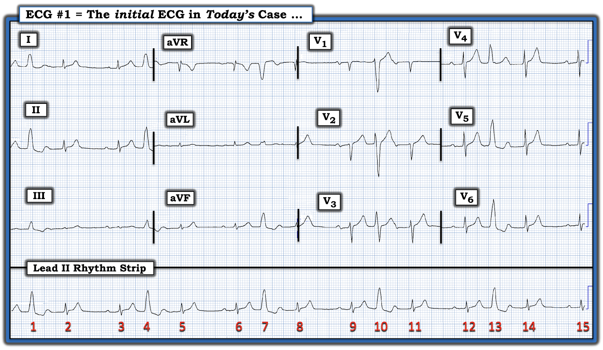
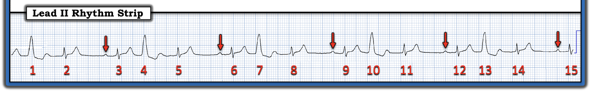
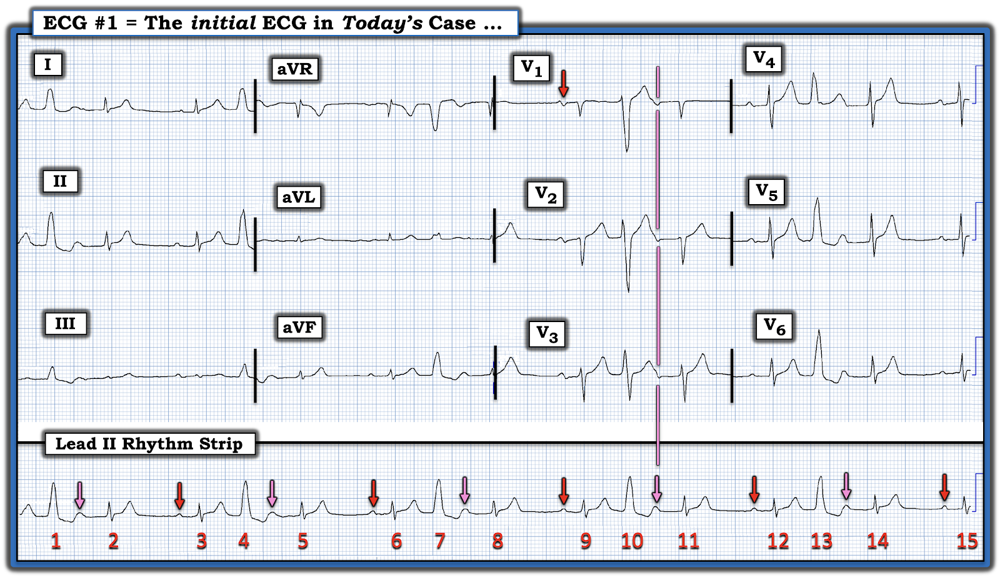
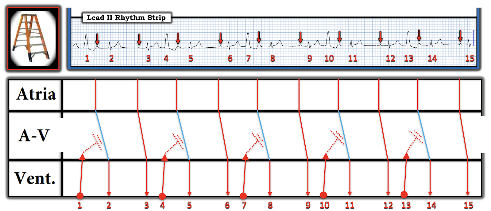
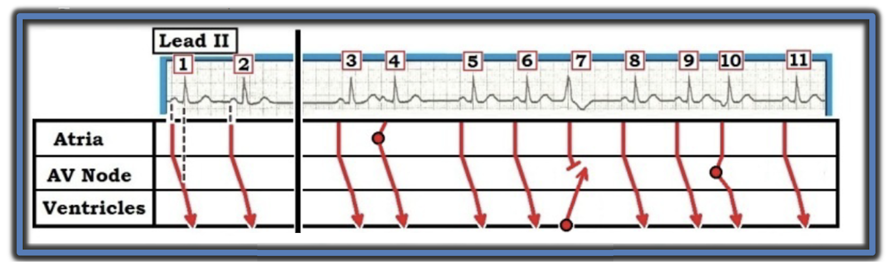

ECG Blog #378 — Wenckebach kèm PVC?
Điện tâm đồ ở Hình 1 — được ghi từ một phụ nữ lớn tuổi bị đau ngực.
- BẠN sẽ đọc bản ghi này như thế nào?
- Đây là loại blốc AV nào? — HAY — không có bằng chứng rõ ràng nào của blốc AV?


SUY NGHĨ CỦA TÔI về điện tâm đồ ở Hình 1:
Bản ghi này khó đọc vì hình dạng QRS thay đổi — và vì hoạt động nhĩ còn chưa chắc chắn.
- “Tin tốt” — là dù lý do đến khám chính của người phụ nữ lớn tuổi này là “đau ngực” — một “cái liếc nhanh” ban đầu trên điện tâm đồ 12 chuyển đạo không gợi ý thay đổi cấp tính rõ ràng nào. Trong những trường hợp như vậy (giả định bệnh nhân ổn định huyết động) — tôi thích xem kỹ nhịp tim trước khi xem chi tiết hơn điện tâm đồ 12 chuyển đạo.
ĐIỂM THEN CHỐT (PEARL) #1: Như đã nêu ở trên — QRS thay đổi — và hoạt động nhĩ chưa chắc chắn ở một số đoạn của bản ghi này. Trong những trường hợp như vậy — tôi thích bắt đầu từ (các) phần của bản ghi mà tôi chắc chắn nhất.
- Nhịp nền ở Hình 1 là nhịp xoang — vì có một sóng P dương với khoảng PR hằng định đứng trước mỗi phức bộ QRS kết thúc từng khoảng ngưng ngắn (tức là trước các nhát #3,6,9,12 và 15 — như các mũi tên ĐỎ ở Hình 2).
- Khoảng PR của mỗi nhát xoang này hơi kéo dài (tức là dài hơn 1 ô lớn một chút = 0.22 giây). Vì vậy — có blốc AV độ 1 .
- QRS của các nhát xoang #3,6,9,12 và 15 trông hẹp trên dải nhịp chuyển đạo II dài này. Quay lại một chút với bản ghi 12 chuyển đạo ở Hình 1 — có thể khẳng định QRS của các nhát dẫn truyền từ xoang thực sự hẹp, vì QRS rõ ràng hẹp ở từng chuyển đạo ghi đồng thời của các nhát #3,6,9,12 và 15 trên cả 12 chuyển đạo.
- Ngược lại — các nhát #1, 4, 7, 10 và 13 rộng, trông khác các phức bộ QRS dẫn truyền từ xoang — và không có sóng P sớm đi trước. Vì vậy — các nhát #1,4,7,10 và 13 là PVC (ngoại tâm thu thất).
- Mặt khác — các nhát #2,5,8,11 và 14 rõ ràng là nhát trên thất — vì chúng hẹp và có hình dạng QRS hầu như giống hệt các nhát dẫn truyền từ xoang ( = các nhát #3,6,9,12 và 15).
CÂU HỎI MẤU CHỐT còn lại:
- Có sóng P nào khác ở Hình 2 không?


XIN NHẤN MẠNH: Việc đọc nhịp hôm nay phụ thuộc vào việc trả lời câu hỏi trên — liệu có thêm sóng P nào ở Hình 2 hay không?
- Hy vọng — bạn đã nghĩ tới khả năng có thêm sóng P xoang đang “ẩn” trong phần cuối sóng T của mỗi PVC (mũi tên HỒNG ở Hình 3). Nếu đúng như vậy — nhịp nền sẽ là một nhịp khá đều (nhưng-không-hoàn-toàn) (tức là loạn nhịp xoang).
- Những thay đổi rất rất nhỏ ở một số bướu nhỏ dương trong sóng T dưới mỗi mũi tên HỒNG ở Hình 3 — ủng hộ khả năng các sóng P xoang hơi không đều có thể ẩn ở đây (tức là bướu trong sóng T dưới mũi tên HỒNG của các nhát #10 và 13 trông hơi hẹp hơn bướu dưới mũi tên HỒNG trong sóng T của các nhát #1,4,7).
- ĐIỂM THEN CHỐT (PEARL) #2: Lý do tôi biết sóng P thực sự đang ẩn trong sóng T dưới mỗi mũi tên HỒNG ở Hình 3 — là nhờ vận dụng khái niệm các chuyển đạo ghi đồng thời. Mũi tên ĐỎ ở chuyển đạo V1 của Hình 3 cho thấy sóng P xoang ở chuyển đạo này trông như thế nào. Lưu ý rằng sóng lệch âm ngay sau PVC ở chuyển đạo V1 — trùng khớp chính xác về thời điểm với bướu dương nhỏ trong sóng T dưới mũi tên HỒNG sau nhát #10 trên dải nhịp chuyển đạo II dài (như vạch thời gian dọc màu HỒNG ở Hình 3).
CÂU HỎI còn lại:
- Vậy nhịp trong bản ghi hôm nay là gì?
- TẠI SAO không có khoảng nghỉ “bù” sau mỗi PVC? (tức là sau các nhát #1,4,7,10 và 13)?
- Vì mỗi mũi tên ở Hình 3 đều là sóng P xoang, và, vì khoảng PR tăng dần trong mỗi “nhóm” nhát — Tại sao đây không phải là blốc AV độ 2 Mobitz I?


TRẢ LỜI các câu hỏi trên:
Cách dễ nhất để trả lời các câu hỏi trên là dùng giản đồ bậc thang (laddergram) (xem Hình 4 bên dưới).
- Như tôi vẫn thường nhấn mạnh, dù học cách vẽ giản đồ bậc thang cần thời gian và luyện tập — học cách đọc giản đồ bậc thang đã được vẽ sẵn không khó, và có thể học nhanh. (Ai muốn luyện đọc và/hoặc học vẽ giản đồ bậc thang — có hơn 80 ví dụ thực hành trong ECG Blog #188).
- Với giản đồ bậc thang ở Hình 4 — dễ hiểu cơ chế của nhịp hôm nay nhất là bỏ qua các nhát #1 và 2, và bắt đầu từ nhát #3.
- Lưu ý rằng mỗi sóng P xoang trước các nhát #3,6,9,12 và 15 — đều được dẫn xuống thất, chỉ chậm rất nhẹ do blốc AV độ 1 (tức là các đường ĐỎ đi lần lượt qua Tầng Nhĩ, Tầng Nút AV và Tầng Thất trên giản đồ bậc thang).
- Các nhát #1,4,7,10 và 13 là PVC — vì vậy tôi vẽ các xung này xuất phát từ thất. Các PVC trên giản đồ bậc thang ở Hình 4 là PVC "xen kẽ" (interpolated) — vì khác với phần lớn PVC, vốn đi kèm một khoảng ngưng sau ngoại tâm thu “bù” hoàn toàn (tức là khoảng ngưng bằng hai lần khoảng R-R bình thường) — PVC “xen kẽ” không có khoảng ngưng dài như vậy theo sau (xem Hình 5 bên dưới để thấy minh họa khoảng nghỉ bù trên giản đồ bậc thang).
- Dù vậy — dẫn truyền ngược dòng phát sinh từ PVC xen kẽ (thể hiện ở Hình 4 bằng các đường ĐỎ chấm chấm đi ngược vào Tầng Nút AV) — có thể làm chậm dẫn truyền của xung xoang đúng lúc kế tiếp, khiến khoảng PR của nhát dẫn truyền từ xoang kế tiếp dài ra (tức là độ nghiêng tăng nhẹ của các đường XANH trên giản đồ bậc thang).
ĐIỂM THEN CHỐT (PEARL) #3: Dù khoảng PR trước các nhát #2,5,8,11 và 14 dài hơn (so với khoảng PR trước các nhát #3,6,9,12 và 15) — chúng ta không thể thấy vì sao điều này xảy ra nếu chỉ dựa vào điện tâm đồ bề mặt
được trình bày ở Hình 3. Thay vào đó — chúng ta phải giả định rằng lý do khoảng PR dài ra — là do dẫn truyền ngược dòng từ các PVC xen kẽ hẳn đã làm chậm dẫn truyền của xung xoang đúng lúc kế tiếp (như các đường ĐỎ chấm chấm ở Hình 4).
- Hiện tượng cố giải thích những sự kiện không thể thấy trên điện tâm đồ bề mặt này — được gọi là dẫn truyền "ẩn" (concealed conduction). Tầm quan trọng của việc biết hiện tượng này — là để nhận ra rằng sự kéo dài khoảng PR của các nhát #2,5,8,11 và 14 trong bản ghi hôm nay — là hậu quả của dẫn truyền ẩn (chứ không phải do blốc AV độ 2 Mobitz I).


=================================
ĐIỂM CUỐI CÙNG: Như đã đề cập ở trên — phần lớn PVC không xen kẽ. Thay vào đó — phần lớn PVC có một khoảng nghỉ "bù" theo sau, như minh họa với nhát #7 ở sơ đồ Hình 5.
- Ý nghĩa của PVC xen kẽ giống như mọi PVC khác. Về lâm sàng — lý do chính cần biết hình ảnh bất thường của PVC xen kẽ (kẹp giữa 2 nhát xoang mà không có khoảng nghỉ bù hoàn toàn) — là để nhận ra hiện tượng này khi nó xảy ra — và để biết rằng khoảng PR của nhát xoang theo sau PVC xen kẽ có thể kéo dài do dẫn truyền ẩn (và điều này không phải là hậu quả của blốc AV độ 2 kiểu Mobitz I).


==================================
T.B. (P.S.): Giờ đã đọc xong nhịp của ca hôm nay — điều quan trọng là NHÌN LẠI phần còn lại của điện tâm đồ 12 chuyển đạo (tức là ở Hình 3).
- Nhịp xoang với PVC xen kẽ thường xuyên. Điện thế QRS nhìn chung giảm. Các khoảng và trục bình thường. Không có lớn buồng tim.
Về
Thay đổi Q-R-S-T:
- Có phức bộ QS ở chuyển đạo V1,V2, với vùng chuyển tiếp hơi muộn (tức là sóng R chưa cao hơn độ sâu sóng S cho tới khoảng giữa chuyển đạo V4-đến-V5). Không có sóng Q nào khác.
- Dấu hiệu đáng chú ý nhất — là sóng T của các nhát dẫn truyền từ xoang ở chuyển đạo trước tim trông nhọn, và có thể cao-hơn-mức-lẽ-ra-phải-có so với biên độ sóng R ở chuyển đạo V2-đến-V6.
- NHẬN ĐỊNH: Bệnh nhân hôm nay là một phụ nữ lớn tuổi thực sự đến khám vì đau ngực. Điện tâm đồ của bà có PVC thường xuyên — và có thể có sóng T tối cấp. Cần thêm thông tin và theo dõi (tức là các điện tâm đồ liên tiếp, troponin — khai thác thêm bệnh sử để xác định triệu chứng là do ngoại tâm thu thường xuyên hay có thể do một biến cố cấp tính). Tiếc là — tôi không có thêm thông tin theo dõi nào về ca này ...
==================================
Lời cảm ơn: Xin cảm ơn 유영준 (Seoul, Hàn Quốc) đã chia sẻ ca bệnh và bản ghi này.
==================================
Các bài ECG Blog liên quan (đến ca hôm nay):
- ECG Blog #205 — Ôn lại cách tiếp cận hệ thống của tôi để đọc điện tâm đồ 12 chuyển đạo.
- ECG Blog #185 — Ôn lại cách tiếp cận Ps, Qs, 3R để đọc rối loạn nhịp.
- ECG Blog #188 — ôn lại cách đọc và/hoặc vẽ giản đồ bậc thang (với hơn 80 ví dụ thực hành! ).
- ECG Blog #68 và ECG Blog #359 — Ôn lại về PVC xen kẽ.